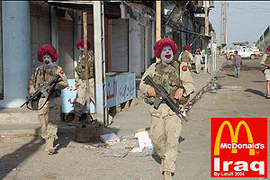

Ejército estadounidense
 De: La Frikipedia, la enciclopedia extremadamente seria.
De: La Frikipedia, la enciclopedia extremadamente seria.
 Al más puro estilo americano
En 1972 cuatro de los mejores hombres del ejército canadiense que formaban un comando, fueron encarcelados por un delito de robo "que no habían cometido". Estos cuatro hombres eran el coronel Jorge W. Arbusto (el parlita), el sargento Osama Bin Laden (Barbacus), el capitán José María Aznar (Jorge Junior) y el teniente José Tojeiro (drojacao). Juntos formaban El Equipo A. El delito "que no cometieron" fue el de atracar un Burger King para acabar con la guerra en la que estaban metidos. Por desgracia, al volver a la base McDonald's, ésta había sido asaltada y todos sus superiores estaban muertos, por lo que no quedaba nadie para demostrar que habían atracado un Burger King bajo órdenes directas de un general de Royal Macdonal (Mas conocido por el payaso del macdonals). Aunque empeoraría mucho su situación, los cuatro miembros del Equipo A decidieron fugarse de la prision canadiense en Toronto donde estaban recluidos, convirtiéndose de esta manera en fugitivos. A partir de ahí, el ejército canadiense, junto con la policía militar y el apoyo del Gobierno de los EEUU of Canadá (estados unidos del canada), emprenden la búsqueda del Equipo A con el fin de arrestarles, someterles a juicio y meterles en prisión.
El Equipo A nunca está en el mismo sitio más de dos días, ya que constantemente están huyendo de las leyes judiciales y del Burger King, aún siendo, recordamos, inocentes. Para poder subsistir, deciden hacerse "soldados de fortuna". Pero un dia decidieron irse a los Estados Unidos de América y asi formar el ejercito estadounidense
con el consentimento del presidente Jorge W. Arbusto Papi.
Personajes
- Coronel Jorge W. (el parlita) Arbusto: el gran cerebro que mueve los músculos; el amo del plan maestro; más frío que una madrugada en la superficie solar. El Parlita es un veterano de la guerra del golfo con más trucos en la manga que un congreso de frikis de cronicas marcianas. Apodado "El Parlita" en honor del famoso general Royal McDonal, El Parlita es un destacado estudioso de la guerra y siempre está "en el ajo", osea listo para actuar. Su frase más conocida es "Me encanta el olor de gasolina quemada por la manhana" .
- Sargento Osama Bin Laden "Barbacus": enorme, forzudo y barbudo, Barbacus se ganó su mote en NUueva York por la "sospechosa barbaca" que mostraba (de ahí lo de "Barbacus"). Pero aunque su temperamento pueda ponerle al rojo vivo, nunca afecta a su buen corazón. Enjoyado y deslumbrante, esta irrepetible chapa a la última era el mejor mecánico de campaña de toda la infantería. Aunque probablemente podría fabricar un avión con una baraja y unas gomas, M.A. nunca obtendrá puntos en ninguna línea aérea: el más duro entre los duros tiene miedo (más bien pánico) a volar.Suele Mandar a kamikazes locos a hacerle el trabajo sucio.
- Capitán José María Aznar (Jorge Junior): ¡Está loco de atar y ya no puede soportarlo! A mitad de camino entre una cabra y un cencerro, Jorge Junior, a pesar de todo, se lleva muy bien con todas las voces que pueblan su cabeza. Experto en politicas que realizó misiones de combate en la guerra de secesión, es capaz de pilotar cualquier vehículo a pedales.
- Teniente José Tojeiro (Drojaman): nacido con una deslumbrante sonrisa y demasiado guapo para jugarse la cara en una pelea, Drojaman aprendio del negocio de la prespitacion y de la droja,y empezo a montar prestibulos y mas tarde se hizo famoso por sacar el drojacao al mercado (de ahi su nombre)y por el robo q le hicieron unas prestitutas en su casa, mientras una daba el placer de la prespitacion la otra estaba sola, en complo ,pa revolver,buscando dinero.
Curiosidades, Meritos y Hazanyas
- Libraron al pueblo iraquí del opresor Saddam Husein y ahora los iraquíes viven felices bajo el mando de los lideres terroristas de Al-Qaeda y diferentes grupos, siempre en armonia.
- Contribuyeron a la captura de las prestituas que cometieron el robo contra José Tojeiro.
- Completaron el videojuego Nitendogs.
- Descubrieron un truco de recursos infinitos para el OGame.
- Se cree que en verdad la barba de Osama es de 100 por ciento poliester y no natural.
- Colaboran en la filmacion de peliculas pr0nograficas.
- Conquista del islote perejil despues de los atentados por parte del gobierno marroqui.
- Desmembramiento de el grupo político de corrupción liderado por Cachuli y La Pantoja.
- Producción de melocotón en almíbar.
- fontaneros 24 horas.
- colaboración en el medio oriente.
Himno oficial del Ejército estadounidense
Se ruega leer esto y entonarlo junto a la canción In the navy de Village People:

|
- Atención soldados:¡A formar! que nos vamos de turismo:
- Son turistas en viaje de grupo
- recorriendo todos los continentes
- van con todo el careto tapado
- de pintura para ser mas valientes
- son los rambos que todos los niños
- quieren ser cuando sean mayores
- son marines haciendo turismo
- ten cuidado que no son objetores
- Haz turismo invadiendo un país
- tu serás el rey del noticiario
- te verá tu mama orgullosa
- disparando algún pobre muchacho.
- Haz turismo invadiendo un país
- es barato y te pagan la estancia.
- Haz turismo invadiendo un país
- Panamá, Nicaragua o Numancia.
- Solucionan todos los problemas
- invadiendo el lugar señalado
- por la CIA, por el presidente
- unos tiros y ya está arreglado
- con su pinta de súper machotes
- su paquete rompiendo los moldes
- son tan listos no tienen problemas
- en matarse entre ellos a golpes
- Haz turismo invadiendo un país
- haz turismo, pedazo de nabo
- haz turismo invadiendo un país
- te traerás a tu casa regalos
- Haz turismo invadiendo un país
- es barato y te pagan la estancia.
- Haz turismo invadiendo un país
- Panamá, Nicaragua o Numancia
|

|
| Himno oficial del Ejército Estadounidense
|
Véase también
Autor(es):
- Nexo
- Doctor grijander
- MURO DE AGUAS
- Aque
- El loco del norte
- Roms
- Guilfer
- Jlmme
- Frikih
- Narcoloco
Frikipedia 2005-2016, Licencia
GFDL 1.2 - Extraído por FrikiLeaks